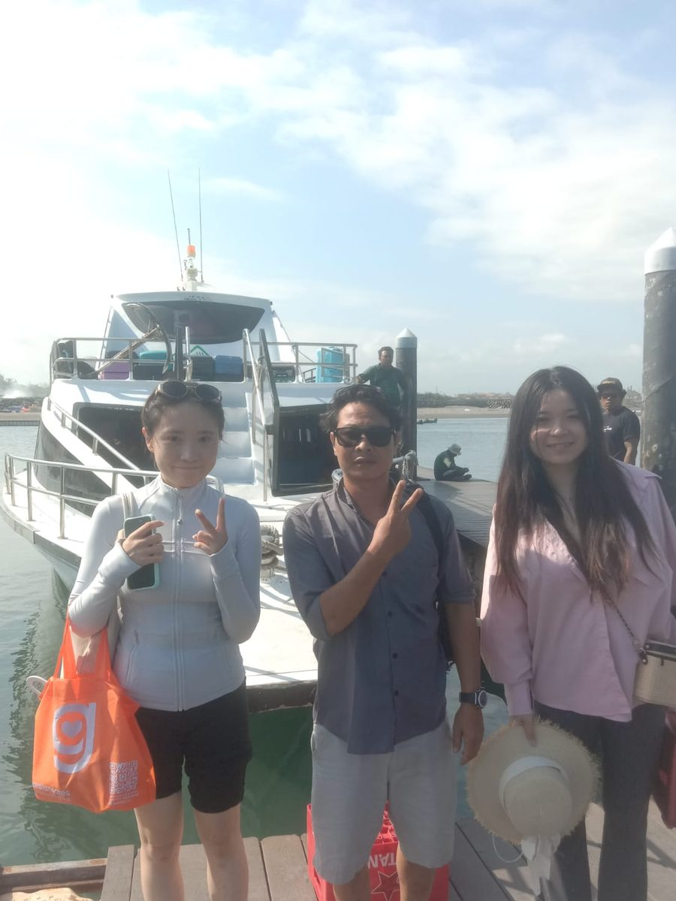

Experience 02 · Hosted by Aris
Solo Traveller Companion
Exploring on your own is better with someone who knows the island, speaks your language and genuinely cares that you have a good day.
- Half day or full day
- Private · 1 guest
- By scooter or car
Times are a guide, not a schedule
How a day usually goes
Aris shapes every day around you on WhatsApp before you go.
- Start
Your choice of day
A first-day orientation, countryside and rice fields, a food morning, or a full day built around what you love.
- Morning
Settle in
Money, SIM cards, what to wear, what things should cost. The things that make the rest of your trip easier.
- Midday
Somewhere quieter
A place most visitors drive straight past.
- Afternoon
Lunch and conversation
A local warung and plenty of time to ask anything about Bali.
- End
Drop-off where you like
Your hotel, a café, or the next place you’re staying.

Popular solo days

Kintamani coffee and volcano
Coffee overlooking the volcano, lunch in Tegallalang and a drop-off in Ubud.
Rice fields and countryside
Quiet back roads, rice terraces and a village or two at your own pace.
A local food morning
Markets and warungs you’d never find on your own.


Is it for you?
- Solo travellers
- First-timers who want a gentle start
- Anyone who prefers a personal day to a big group
Included
- Your host for the day
- Scooter ride with helmet provided, or a car
- Coffee and tastings along the way
- Water
Not included
- Lunch
- Entry tickets
- Anything you choose to buy
Good to know
- Pickup and drop-off at reception or the entrance, never inside rooms
- Your route is agreed before the day, and you’re welcome to share your live location with someone
- Aris is a licensed rider. Before you travel, check your travel insurance covers riding a scooter as a passenger
- Even if you hold an international licence, Aris recommends riding with a local: Balinese roads and traffic rules are very different
- Prefer a car? Ask when you enquire
From a guest

Plan this day with Aris.
Send your dates, how many of you there are and where you're staying.
Message Aris on WhatsApp